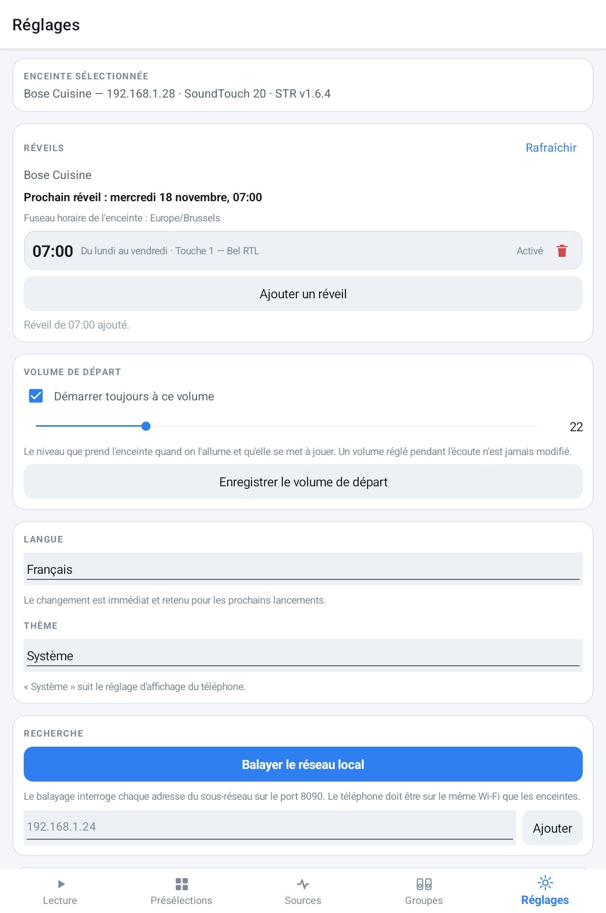
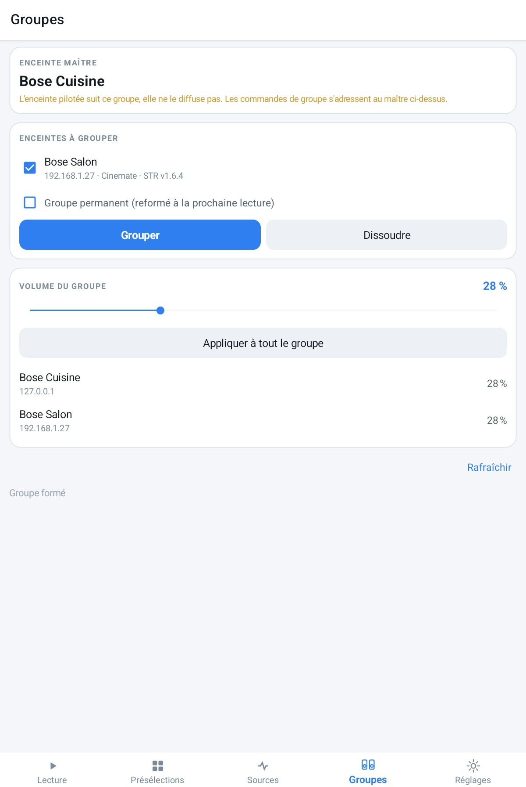

SoundReborn Remote — Manuale d'uso
Versione 1.8.2 · Android 7 e successivi
Indice
- Cosa serve prima
- Installazione
- Primo avvio
- La scheda Riproduzione
- La scheda Preselezioni
- La scheda Sorgenti
- La scheda Gruppi
- La scheda Impostazioni
- Gesti
- Cosa fare se…
- Limiti noti
- Note legali
1. Cosa serve prima
SoundReborn Remote comanda i diffusori Bose SoundTouch da un telefono o da un tablet Android. Tutto avviene sulla tua rete locale: nessun account, nessun servizio online, nessun dato che esce da casa.
Quattro condizioni:
- Telefono e diffusori sulla stessa rete Wi-Fi. Attenzione alle reti ospiti e ai router che isolano i dispositivi tra loro: in quel caso non verrà trovato nulla.
- L'agente STR installato sui diffusori. Sostituisce ciò che forniva il cloud Bose fino alla sua chiusura, il 6 maggio 2026. Senza di esso l'app funziona ancora, ma si limita a ciò che espone il solo firmware: volume, bassi, preselezioni già memorizzate. La ricerca delle stazioni, l'assegnazione delle preselezioni e i gruppi affidabili passano tutti dall'agente. L'installazione si fa con lo strumento STR per PC o Mac — https://st-reborn.de. Questa app non lo installa; segnala soltanto i diffusori che ne sono privi.
- Un agente STR 1.8.0 o successivo per modificare i gruppi. Con un agente più vecchio, l'app lo dice e non tocca i gruppi; tutto il resto funziona.
- Android 7 o successivo.
2. Installazione
L'app non è distribuita tramite il Play Store. Scaricala dalla pagina Releases del progetto: https://github.com/ben240374/SoundRebornRemote/releases
- Scarica il file
.apksul telefono. - Aprilo. Android chiederà il permesso di installare da una fonte sconosciuta: concedilo all'app che ha fatto il download, di solito il browser.
- Installa, poi apri.
Al primo avvio non viene chiesto nessun permesso particolare: l'app non tocca né i contatti, né la posizione, né la memoria.
3. Primo avvio
L'app si apre nella lingua del telefono se la conosce — francese, inglese, tedesco, olandese, spagnolo, italiano — e in inglese altrimenti. Puoi cambiarla in qualsiasi momento.
Al primo avvio non è conosciuto nessun diffusore. Vai in Impostazioni, poi Cerca nella rete locale.

La ricerca avviene in due tempi. Prima chiede ai dispositivi di annunciarsi (mDNS): è la via rapida, due o tre secondi. Se nessuno risponde, interroga uno per uno i 254 indirizzi della sottorete sulla porta 8090 — qualche secondo in più, ma funziona anche dove il multicast è filtrato.
I diffusori trovati compaiono sotto DIFFUSORI CONOSCIUTI. Tocca Usa su quello che vuoi comandare. Viene ricordato: al prossimo avvio l'app vi si ricollega da sola.
Se la ricerca non trova nulla ma conosci l'indirizzo IP del diffusore, scrivilo nel campo previsto e tocca Aggiungi.
4. La scheda Riproduzione
La schermata principale, quella che apri per agire in fretta.

Scegliere il diffusore
In alto, una scheda per ogni diffusore conosciuto, con il modello e la versione dell'agente STR. La scheda bordata di blu è quella comandata; tocca un'altra scheda per cambiare, senza passare dalle impostazioni.
Il pallino a destra indica il collegamento: in diretta significa che il diffusore invia i suoi cambiamenti in tempo reale, interrogazione che l'app li rilegge a intervalli. In questo secondo caso, una modifica fatta da un altro telecomando impiega un secondo o due a comparire.
Ora
La copertina, il titolo e la sorgente di ciò che suona. Per una radio, il suo logo e il suo nome; per Spotify, la copertina dell'album.
Quando suona Spotify e l'agente STR è alla versione 1.8.1 o successiva, sotto il titolo compaiono due pulsanti: Mi piace aggiunge il brano in corso ai Brani che ti piacciono, Non mi piace lo toglie, come i tasti con il pollice del telecomando. Il brano va nell'account Spotify con cui è collegato il diffusore, che non è per forza quello del tuo telefono. Un diffusore con display mostra «LIKED» o «REMOVED».
Durante un tasto Spotify (una preselezione che riproduce una playlist Spotify), il diffusore conosce solo il nome della playlist. Con l'agente STR 1.8.2 o successivo, l'app mostra al suo posto il brano, l'artista e la copertina, con «Spotify · playlist» come sorgente; il brano viene riletto circa ogni cinque secondi.
Comandi
Quattro tasti: stop, precedente, riproduci/pausa, successivo. A seconda della sorgente alcuni non hanno effetto: un flusso radio in diretta non si può riavvolgere.
La barra verde Standby spegne il diffusore; una volta spento, diventa Accendi.
Sotto la barra, Timer di spegnimento manda il diffusore in standby dopo un tempo da 15 a 120 minuti. Mentre è attivo, il collegamento mostra il tempo rimanente; toccalo per cambiare la durata o annullare. In un gruppo, l'app chiede se spegnere tutto il gruppo o solo il diffusore selezionato. Il timer vive nell'agente STR del diffusore: continua se chiudi l'app, ma un riavvio del diffusore lo annulla. Il collegamento compare solo se l'agente conosce il timer.
Volume
Muto, livello, meno, cursore, più. La percentuale è indicata a destra.
Quando il diffusore fa parte di un gruppo, questo cursore diventa il volume di tutto il gruppo: spostarlo sposta ogni diffusore della stessa quantità, e così l'equilibrio che hai impostato tra loro resta. Se la cucina è a 60 e il soggiorno a 30, alzare il gruppo di 10 dà 70 e 40, non 70 e 35.
Il tasto =, tra muto e meno, fa il contrario: porta ogni diffusore del gruppo al valore indicato. Gruppo a 25, tutti a 25. Compare solo quando un gruppo è attivo: da solo, un diffusore non ha nulla da livellare.
Sotto il cursore, Per diffusore elenca ogni membro del gruppo con il suo cursore e i suoi tasti − e +, così puoi abbassare la cucina senza toccare il soggiorno. Un diffusore spento appare attenuato e non reagisce: mandargli un comando farebbe solo aspettare l'app per niente.
Bassi e preselezioni

I bassi vanno da -10 a +10 a seconda del modello. Non c'è regolazione degli acuti: l'API del diffusore non ne offre — non è una dimenticanza dell'app.
Le sei preselezioni sono ripetute qui per risparmiare un cambio di scheda. Il riquadro bordato di verde è quello che suona.
Quando l'agente STR gestisce la seconda fila, sopra i riquadri compaiono due pulsanti, Una volta e Due volte: il secondo mostra le sei stazioni che il diffusore avvia quando si preme due volte un tasto. La scelta vale per entrambe le schede. Ogni riquadro porta in alto il nome del suo tasto («Tasto 1» – «Tasto 6», in entrambe le file), e il pulsante Due volte porta un piccolo numero: quanti tasti della seconda fila hanno una stazione.
Salva su un tasto ciò che suona, sotto i riquadri, memorizza sul tasto che scegli ciò che il diffusore riproduce in questo momento — stazione, album o brano della libreria. Spotify, AUX e Bluetooth non si possono salvare in questo modo.
Raggruppa con
Un pulsante per ogni diffusore, tranne quello a cui vanno i comandi. Tocca un pulsante per aggiungere quel diffusore al gruppo; compaiono una spunta e un bordo verde. Toccalo di nuovo per toglierlo.
Il raggruppamento richiede qualche secondo: nel frattempo il riquadro mostra Raggruppamento con …, poi il risultato — o l'errore, in rosso.
Il diffusore principale viene trovato, non presunto. In un gruppo, un diffusore trasmette e gli altri lo seguono. Se selezioni un diffusore che segue, l'app lo dice — Raggruppato con … in ambra — e invia trasporto, preselezioni e volume al principale, perché è lui che suona. Selezionare un diffusore quindi non interrompe mai ciò che stai ascoltando. Standby e timer di spegnimento fanno eccezione: agiscono sul diffusore selezionato.
Su un diffusore che segue, il pulsante spuntato è il diffusore stesso: toccarlo lo fa uscire dal gruppo. Il gruppo si allarga dal diffusore principale, perché è lui che lo compone.
Spegnere un diffusore lo toglie prima dal gruppo, e scioglie il gruppo se era l'ultimo membro. Riaccenderlo ti restituisce un diffusore da solo, che suona ciò che suona, e che puoi raggruppare di nuovo.
Il collegamento Aggiorna in fondo rilegge tutto: titolo in corso, copertina, volume, stato del gruppo.
Se il diffusore che aggiungi suona qualcos'altro, o è in pausa, l'app lo dice prima di raggruppare: «Salon sta riproducendo Radio Contact. Aggiungerlo al gruppo interrompe questo ascolto per riprodurre Bel RTL.» Non cambia nulla finché non tocchi Aggiungi. Un diffusore in standby, o che suona già la stessa cosa, viene aggiunto senza domanda.
5. La scheda Preselezioni

I sei tasti
Gli stessi sei dei tasti fisici del diffusore. Ogni riquadro mostra il logo della stazione e il suo bitrate. Tocca per avviare la riproduzione; il bordo verde indica quello che suona.
I loghi vengono scaricati e poi conservati sul telefono. Quando ne manca uno, la stazione non pubblica un'immagine utilizzabile, oppure il suo server non risponde.
Una volta, due volte
Con un agente STR recente (v1.6 e successivi), ogni tasto del diffusore porta due stazioni: una pressione avvia la prima, due pressioni rapide la seconda. I pulsanti Una volta e Due volte scelgono la fila mostrata; i riquadri mantengono il numero del tasto, da ① a ⑥.
La seconda fila esiste solo nell'agente: i pulsanti non compaiono su un diffusore senza agente, o con un agente più vecchio.
Un tasto che ha una stazione solo sulla seconda fila appare vuoto sotto Una volta: una sola pressione sul diffusore avvia allora la stazione della seconda fila (agente STR 1.6.3 e successivi).
Rinominare e cancellare un tasto
Ogni riquadro porta in alto il nome del suo tasto. Su un tasto memorizzato dall'agente STR, accanto ci sono due piccoli pulsanti: ✎ rinomina il tasto e ✕ lo cancella, dopo conferma. Rinominare cambia solo il nome mostrato: la stazione, la sua immagine e la playlist di un tasto Spotify restano. Un nome conta al massimo 64 caratteri. Il pulsante Due volte indica quanti tasti della seconda fila hanno una stazione.
Un tasto che conosce solo il firmware del diffusore, e un tasto vuoto, non hanno questi pulsanti: l'agente non avrebbe nulla da rinominare né da cancellare.
Copiare i tasti su un altro diffusore
Il riquadro Copia i tasti copia tutti i tasti del diffusore selezionato su un altro diffusore STR, o su tutti. Tocca Copia su…, scegli la destinazione, poi conferma. Ogni tasto impostato qui sostituisce quello di destinazione; gli altri tasti di destinazione restano. Entrambe le file vanno a una destinazione che ne ha due. Quando un tasto Spotify fa parte della copia, l'account Spotify di questo diffusore viene trasmesso alla destinazione: la domanda di conferma lo dice. Il risultato è mostrato per diffusore.
La copia richiede l'agente STR 1.6.5 o successivo sul diffusore selezionato.
Trovare una stazione
La casella di ricerca interroga radio-browser.info, un elenco aperto curato da volontari. Due menu a tendina restringono la ricerca a un paese e a una lingua, e Le più ascoltate mostra le stazioni più ascoltate senza scrivere nulla.
La casella Solo compatibili Bose è spuntata in partenza, ed è meglio lasciarla così: esclude i formati che i diffusori SoundTouch non sanno decodificare (Ogg, Opus, FLAC), che darebbero silenzio senza alcun messaggio d'errore.
Tocca un risultato e si apre un menu con
- Ascolta ora — riproduce subito la stazione, senza memorizzare nulla;
- ① Assegna a questo tasto se il tasto è libero, oppure ① Sostituisci Bel RTL se è occupato — il nome della stazione già presente è indicato, così non sovrascrivi quella a cui tenevi.
L'assegnazione richiede l'agente STR. Senza di esso è possibile solo l'ascolto immediato; la memorizzazione si fa allora tenendo premuto il tasto sul diffusore stesso, oppure dall'app STR per computer.
Con la seconda fila, il menu offre dodici tasti: da ① a ⑥, poi da ①×2 a ⑥×2. Una stazione occupa un solo tasto: se è già memorizzata altrove, l'agente rifiuta e l'app indica il tasto che la porta.
6. La scheda Sorgenti

Bluetooth, AUX e Standby in alto: tre scorciatoie dirette.
Spotify non si comanda da questa app. Apri Spotify sul telefono e scegli il diffusore nel selettore dei dispositivi (Spotify Connect): compare lì non appena l'agente STR è in funzione.
Sorgenti del diffusore elenca ciò che il diffusore dichiara, con il suo stato: READY
significa disponibile, UNAVAILABLE che la sorgente esiste ma non si può usare — di solito
un servizio di streaming il cui account non è più raggiungibile dalla chiusura del cloud.
Riprodurre un flusso accetta l'indirizzo di un flusso audio diretto — un .mp3 o un
.m3u8 — e lo avvia sul diffusore. Utile per una web radio assente dall'elenco. Richiede
l'agente STR.
Registra conserva sul telefono un estratto della radio internet che suona sul diffusore, per riascoltarlo o inviarlo (WhatsApp, e-mail…). Tocca Registra: la registrazione si ferma quando tocchi Ferma, o da sola dopo 5 minuti. Continua anche a schermo spento: una notifica «Registrazione» mostra il contatore e un pulsante Ferma. Alla prima registrazione, Android 13 e successivi chiedono di consentire le notifiche; se rifiuti, la registrazione funziona comunque, senza la notifica.
Si registrano solo le radio internet il cui flusso è raggiungibile: preselezioni STR,
stazioni trovate nell'elenco, flussi avviati a mano. Spotify, Deezer, Bluetooth e AUX non
passano dal telefono e non si possono registrare, come pure i flussi HLS (.m3u8). Il
telefono apre il flusso della stazione accanto al diffusore: l'ascolto non viene
disturbato, ma la registrazione consuma dati, circa 1 MB al minuto.
L'elenco conserva le ultime 10 registrazioni, con la stazione, la data e la durata. ▶ le riproduce sul telefono, ⤴ apre il menu di condivisione di Android, il cestino elimina dopo conferma. Oltre 10, l'app non ne fa una nuova: elimina prima quella che non ti serve più. Le registrazioni restano nell'app e vengono eliminate se la disinstalli. L'elenco resta disponibile anche quando nessun diffusore risponde: è impossibile solo registrare.
Durante l'ascolto di una registrazione, sotto di essa compaiono una barra e un contatore: «01:23 / 04:50», la posizione e la durata. Trascina la barra per spostarti nella registrazione.
Ascoltati di recente mostra la cronologia conservata dall'agente: tocca una riga per riavviarla.
Un album o una cartella della libreria vengono riprodotti per intero, non solo il primo brano. Se il server multimediale è spento, l'app lo dice invece di annunciare una riproduzione che non parte mai.
7. La scheda Gruppi

Diffusore principale indica quello che trasmette davvero — letto dai diffusori stessi, non presunto come quello che hai selezionato.
Diffusori da raggruppare: spunta quelli che devono seguire, poi Raggruppa. Sciogli scioglie tutto il gruppo.
Un diffusore appartiene a un solo gruppo alla volta, ed è il principale che lo compone. Se il diffusore che hai selezionato ne segue un altro, Raggruppa è disattivato e un messaggio ti indirizza al principale.
L'opzione Gruppo permanente chiede all'agente di ricomporre il gruppo alla prossima riproduzione, invece di lasciarlo sciogliere quando la musica si ferma. Prima di allargare un gruppo esistente, l'app rilegge questa opzione e la ripassa invariata: aggiungere un diffusore non trasforma più un gruppo permanente in un gruppo normale.
Volume del gruppo agisce su tutti i diffusori insieme, spostando i volumi e mantenendo le differenze. Se la cucina è a 60 e il soggiorno a 30, alzare il gruppo di 10 dà 70 e 40 — non 70 e 35. Sotto quel cursore, ogni diffusore del gruppo ha il suo. Applica a tutto il gruppo porta tutti allo stesso valore, come fa il tasto = nella scheda Riproduzione. Questo riquadro compare solo quando esiste un gruppo.
Un gruppo permanente resta come l'hai costruito. Mettere in standby uno dei suoi diffusori lo toglie dal gruppo che suona senza toglierlo dal gruppo salvato: rientra alla prossima riproduzione. E quando un gruppo permanente aspetta la sua prossima riproduzione, l'app lo dice e chiede conferma prima di formarne un altro al suo posto.
Se nessun gruppo suona, è salvato un gruppo normale e tu spunti Gruppo permanente, l'app chiede anche in questo caso: un gruppo permanente che l'agente tiene da parte dietro di esso verrebbe sostituito.
8. La scheda Impostazioni

Diffusore selezionato: nome, indirizzo e modello. È il diffusore che hai scelto — non per forza quello che riceve i comandi. Quando segue un gruppo, una riga in ambra dice dove vanno davvero i comandi, e perché.
Sveglie: quelle del diffusore selezionato — una sveglia suona solo sul diffusore su cui è salvata, anche in un gruppo. Ogni sveglia riproduce un tasto (da 1 a 6, o da 1 a 6 premuto due volte) all'ora e nei giorni che scegli. Imposti anche il suo volume (o mantieni quello del diffusore), lo spegnimento automatico e la durata del posticipo. La scheda mostra la prossima sveglia come la prevede il diffusore, e avvisa quando il suo orologio non è ancora impostato. Se il fuso orario del diffusore è vuoto (UTC), quello del telefono viene salvato con la prossima sveglia. Le sveglie modificate altrove — la pagina STR del telefono, l'app per computer — non vengono sovrascritte: l'app salva solo ciò che hai cambiato. Richiede l'agente STR. L'ora si imposta sul quadrante dell'orologio del telefono. Il cestino su una riga elimina la sveglia, dopo conferma.
Volume di avvio: il livello che il diffusore assume quando viene acceso e inizia a suonare. Spunta la casella, scegli il livello, poi Salva il volume di avvio. Un volume regolato durante l'ascolto non viene mai modificato.
Lingua: italiano, francese, inglese, tedesco, olandese, spagnolo. La modifica è immediata, senza riavvio, e viene ricordata.
Tema: Sistema, Chiaro o Scuro. «Sistema» segue l'impostazione di visualizzazione del telefono, compreso il passaggio automatico della sera.
Ricerca: la ricerca nella rete, e l'inserimento manuale per indirizzo IP. La scoperta interroga prima mDNS e scandisce la sottorete solo se non trova nulla. La scansione è limitata agli intervalli di indirizzi privati, quindi non raggiunge mai una rete mobile o un tunnel VPN.
Diffusori conosciuti: l'elenco memorizzato. Usa passa a uno di essi, ✕ lo dimentica. Un diffusore segnato «Senza STR — pronto per l'installazione» risponde bene ma non ha l'agente; più in basso compare allora un riquadro esplicativo, con un collegamento al sito del progetto STR.
Un diffusore il cui agente è precedente alla versione 1.8.0 fa comparire un riquadro simile, Agente STR troppo vecchio, e la sua scheda nella scheda Riproduzione indica «troppo vecchio».
Diagnostica: Interroga il diffusore attivo riporta i dati del diffusore selezionato — nome, modello, identificativo, versione del firmware, l'agente con la sua porta e la sua versione lette in diretta su 17008 e 8888, lo stato delle notifiche, l'intervallo dei bassi, l'elenco degli endpoint API riconosciuti, e ciò che ogni diffusore conosciuto dichiara sulla zona attuale. Sono le informazioni da allegare a una segnalazione. Svuota la cache dei loghi obbliga a scaricare di nuovo le immagini delle stazioni.
Informazioni: la versione, il ringraziamento al progetto STR con un collegamento al suo sito, e le note legali.
9. Gesti
Uno scorrimento orizzontale passa alla scheda successiva o precedente: Riproduzione → Preselezioni → Sorgenti → Gruppi → Impostazioni. Il gesto deve essere deciso; un trascinamento lento non viene letto come un cambio di scheda.
Uno scorrimento che parte su un cursore viene preso dal cursore: è voluto, altrimenti il volume diventerebbe impossibile da regolare. Inizia il gesto su una zona neutra.
10. Cosa fare se…
La ricerca non trova nessun diffusore. Verifica che il telefono sia sulla stessa rete Wi-Fi dei diffusori, non sulla rete ospiti né sui dati mobili. Alcuni router isolano i dispositivi tra loro — l'impostazione si chiama di solito isolamento AP o modalità client. Se conosci l'indirizzo IP, inseriscilo a mano nelle Impostazioni.
Il diffusore compare ma non risponde nulla. Probabilmente è in standby profondo. Riattivalo con il pulsante di accensione della scheda Riproduzione, o premi un tasto fisico sul diffusore.
Una preselezione non fa nulla. Un tasto vuoto non ha nulla da avviare. Verifica anche che il diffusore non sia spento.
Non compare nessun logo delle stazioni. Svuota la cache dei loghi nella diagnostica. Se il problema resta per una stazione in particolare, la causa è il suo server di immagini.
Su un diffusore manca la versione dell'agente. O l'agente non è installato, o è troppo vecchio per pubblicare il suo numero di versione. Avvia di nuovo la ricerca.
Il gruppo non si forma. Entrambi i diffusori devono essere accesi e raggiungibili. Se uno dei due non ha l'agente STR, il raggruppamento passa dal firmware, meno affidabile, che a volte rifiuta senza messaggio.
L'app è nella lingua sbagliata. Impostazioni → Lingua. La tua scelta prevale sulla lingua del telefono.
Il pulsante Registra è disattivato. Il messaggio sotto il titolo ne dà il motivo: non suona nulla, la sorgente non è una radio internet, oppure l'indirizzo del flusso di questa stazione è sconosciuto. Riavvia la stazione da una preselezione o dall'elenco, poi riapri la scheda Sorgenti.
11. Limiti noti
- Nessuna regolazione degli acuti. L'API del diffusore non ne offre.
- L'app non installa l'agente STR. Servono un accesso di sistema al diffusore e un riavvio; è il compito dello strumento STR per PC o Mac.
- Spotify si comanda da Spotify, tramite Spotify Connect.
- Nessuna navigazione nella libreria DLNA per ora.
- Solo Android. Non esiste una versione iOS.
- La seconda fila, il timer di spegnimento e «salva ciò che suona» richiedono un agente STR recente. Con un agente più vecchio questi comandi non compaiono o vengono rifiutati.
- Coppie stereo. L'app non crea né scioglie una coppia stereo. Una coppia non può guidare un gruppo; con un agente STR 1.6.3 o successivo può unirsi a un gruppo avviato su un altro diffusore.
- Registrazione: solo radio internet, al massimo 5 minuti per registrazione, 10 registrazioni conservate.
- Copia dei tasti: agente STR 1.6.5 o successivo sul diffusore di origine.
- Mi piace e Non mi piace: agente STR 1.8.1 o successivo. Il brano va nell'account Spotify con cui è collegato il diffusore.
- Rinominare e cancellare i tasti: agente STR 1.8.0 o successivo; il brano di un tasto Spotify: 1.8.2 o successivo.
12. Note legali
SoundReborn Remote è un progetto personale, distribuito con licenza MIT.
Non è prodotto né approvato da Bose Corporation. «Bose» e «SoundTouch» sono marchi di Bose Corporation, citati qui solo per indicare la compatibilità.
È indipendente dal progetto STR: non è realizzato, mantenuto né supportato da esso. I problemi di questa app vanno segnalati sul suo repository, non al progetto STR.
L'agente STR (SoundTouch Reborn) è opera di Jens Roggenfelder (JRpersonal) — https://st-reborn.de. Senza di esso, questa app non avrebbe nulla da comandare.
L'elenco delle stazioni è fornito da radio-browser.info.
Il codice è stato scritto con Claude (Anthropic).